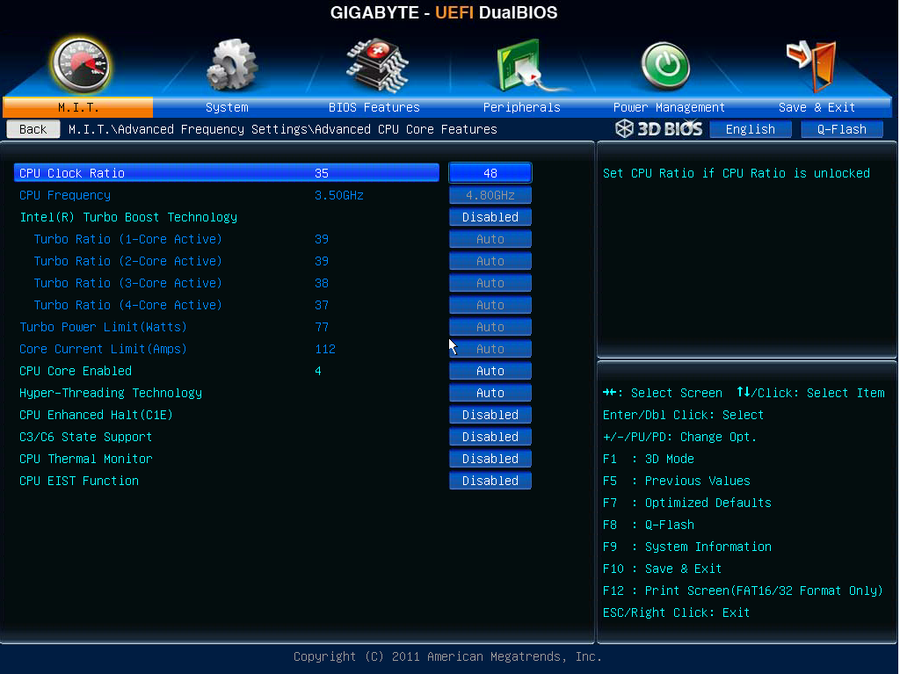

CPU multiplier, front-side bus frequency, and CPU voltage
To start overclocking, you’ll need to modify settings in your motherboard’s BIOS (or UEFI in newer systems). There might be an overwhelming array of options to choose from – don’t panic! For the purposes of this guide, we’ll focus on just three important settings.

Above: an example of a UEFI settings panel.
CPU Multiplier: The CPU clock rate is specified as a multiple of the front-side bus frequency: CPU clock rate = front-side bus frequency * CPU multiplier. Adjusting the CPU multiplier allows you to change the CPU’s clock rate without affecting any of the other components on the motherboard. However, not all processors allow their CPU multiplier to be changed.
Front-Side Bus Frequency: The front-side bus frequency affects not only the CPU frequency, but also the RAM frequency and the frequency of the PCI cards attached to your motherboard. As such, trying to overclock your CPU by increasing the front-side bus frequency can have unintended consequences, since it affects other components on the motherboard. However, if your CPU does not have an unlocked multiplier, adjusting the front-side bus frequency may be the only way of increasing your CPU’s clock rate.
CPU Voltage: There are two ways to specify the voltage to be applied to the CPU – “fixed mode” and “offset mode”. In fixed mode, you specify a constant voltage to be applied to the CPU at all times. To use fixed mode, you should first determine what the typical voltage is for the CPU without overclocking – either by checking the documentation or doing empirical testing yourself – then increase the voltage with respect to that baseline. In offset mode, you allow the motherboard to determine a voltage based on the CPU load, then add an offset on top of the automatically-chosen voltage. Either method can be used to increase the CPU voltage during overclocking.